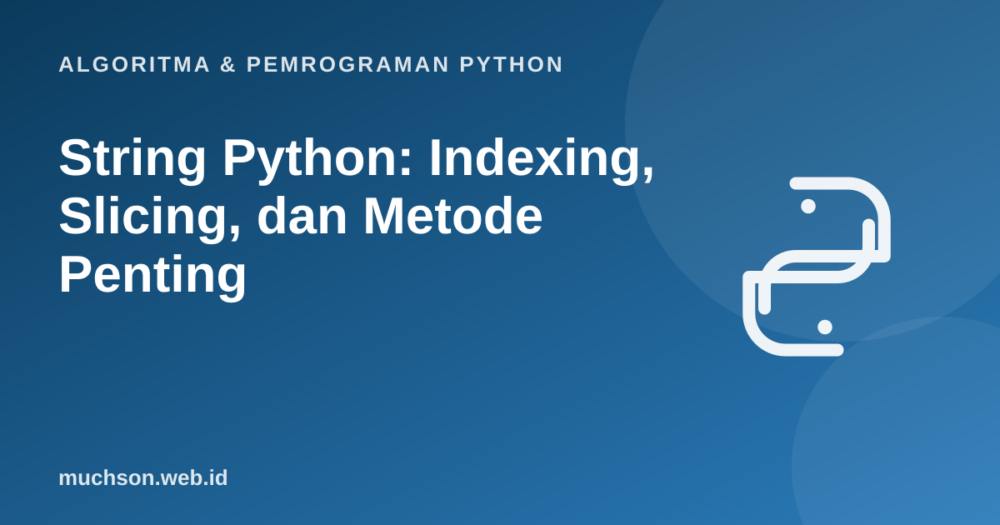

Beranda › Artikel › Algoritma & Pemrograman Python
Algoritma & Pemrograman PythonString Python: Indexing, Slicing, dan Metode Penting
Hampir semua data dalam kehidupan nyata berbentuk teks: nama, alamat, email, isi pesan. Menguasai string berarti menguasai cara memotong, mencari, mengganti, dan memeriksa teks. Fitur slicing Python membuat banyak pekerjaan yang butuh puluhan baris di bahasa lain cukup satu ekspresi.
Sebaiknya sudah paham: variabel dan tipe data, perulangan for

Setelah membaca dan mencoba materi ini, Anda mampu:
- mengakses karakter dengan indeks positif dan negatif
- memakai slicing s[awal:akhir:langkah] dan membaca hasilnya dengan benar
- menjelaskan mengapa string immutable
- memakai metode string yang paling sering dibutuhkan
- menulis algoritma sederhana berbasis string, seperti palindrom
String adalah urutan karakter berindeks
s = "PYTHON"
print(s[0], s[5], s[-1], s[-6])
print(len(s))
for ch in s:
print(ch, end=" ")P N N P
6
P Y T H O N Slicing: mengambil bagian string
Bentuknya s[awal:akhir:langkah]. Indeks awal termasuk, akhir tidak termasuk. Bagian yang dikosongkan memakai nilai bawaan. Slicing tidak pernah menimbulkan IndexError meski indeksnya melebihi panjang.
s = "PYTHON"
print(s[1:4]) # YTH
print(s[:3]) # PYT (dari awal)
print(s[3:]) # HON (sampai akhir)
print(s[::2]) # PTO (tiap 2 huruf)
print(s[::-1]) # NOHTYP (dibalik)
print(s[-3:]) # HON (3 terakhir)
print(s[2:100]) # THON (melebihi panjang tidak error)YTH
PYT
HON
PTO
NOHTYP
HON
THON
String bersifat immutable
s = "halo"
try:
s[0] = "H"
except TypeError as e:
print("Error:", e)
s = "H" + s[1:] # membuat string BARU, lalu s menunjuk ke sana
print(s)Error: 'str' object does not support item assignment
Halo
Penggabungan berulang dengan += di dalam perulangan panjang membuat banyak string baru dan lambat. Kumpulkan potongan dalam list lalu gabungkan sekali dengan "".join(potongan).
Metode string yang paling sering dipakai
| Metode | Fungsi | Contoh |
|---|---|---|
| upper() / lower() | Huruf besar / kecil | "Halo".upper() → "HALO" |
| strip() | Buang spasi di kedua ujung | " a ".strip() → "a" |
| split(sep) | Pecah menjadi list | "a,b,c".split(",") → ["a","b","c"] |
| join(iter) | Gabung list menjadi string | "-".join(["a","b"]) → "a-b" |
| replace(a, b) | Ganti semua kemunculan | "aab".replace("a","x") → "xxb" |
| find(x) / index(x) | Posisi pertama (find memberi -1 bila tak ada) | "halo".find("l") → 2 |
| count(x) | Hitung kemunculan | "banana".count("a") → 3 |
| startswith / endswith | Periksa awalan / akhiran | "a.py".endswith(".py") → True |
| isdigit() / isalpha() | Periksa jenis karakter | "123".isdigit() → True |
kalimat = " Belajar Python itu Menyenangkan "
bersih = kalimat.strip()
print(bersih)
kata = bersih.split()
print(kata, len(kata))
print("-".join(kata).lower())
print(bersih.replace("Python", "Algoritma"))
print(bersih.count("a"), bersih.find("Python"), bersih.startswith("Belajar"))Belajar Python itu Menyenangkan
['Belajar', 'Python', 'itu', 'Menyenangkan'] 4
belajar-python-itu-menyenangkan
Belajar Algoritma itu Menyenangkan
4 8 True
Karakter dan kode Unicode
print(ord("A"), ord("a"), chr(66), chr(0x1F600))
huruf = "geser"
print("".join(chr((ord(c) - 97 + 3) % 26 + 97) for c in huruf)) # sandi Caesar, geser 3
print("apel" < "jeruk", "Z" < "a") # urutan kamus berdasarkan kode Unicode65 97 B 😀
jhvhu
True True
Algoritma: memeriksa palindrom
Palindrom dibaca sama dari depan maupun belakang, misalnya "katak". Untuk kalimat, abaikan spasi dan huruf besar.
def palindrom(teks):
bersih = "".join(c.lower() for c in teks if c.isalnum())
return bersih == bersih[::-1]
for t in ["katak", "Kasur ini rusak", "Python"]:
print(repr(t), palindrom(t))'katak' True
'Kasur ini rusak' True
'Python' False
1. Tulis ekspresi untuk mengambil 3 huruf terakhir dan 3 huruf pertama dari s, lalu menggabungkannya.
s[-3:] + s[:3]2. Hitung jumlah huruf vokal dalam sebuah kalimat.
sum(1 for c in kalimat.lower() if c in "aiueo")3. Ubah "nama_lengkap_pengguna" menjadi "NamaLengkapPengguna".
"".join(k.capitalize() for k in "nama_lengkap_pengguna".split("_"))4. Cek apakah dua kata anagram (huruf sama, urutan beda), misalnya "listen" dan "silent".
sorted(a) == sorted(b). Mengurutkan huruf keduanya lalu membandingkan.- Indeks mulai 0 dari kiri, atau -1 dari kanan.
- s[awal:akhir:langkah]: awal termasuk, akhir tidak termasuk, langkah negatif membalik.
- String immutable; operasi yang "mengubah" membuat string baru.
- Metode utama: strip, split, join, replace, find, count, upper, lower.
- Palindrom: bersihkan teks lalu bandingkan dengan kebalikannya (s[::-1]).
Tanya jawab
Apa bedanya find() dan index()?
Bagaimana menangani teks Unicode seperti emoji?
Apa bedanya single quote dan double quote?
Referensi
- Dokumentasi Python: Text Sequence Type (str)
- Dokumentasi Python: Strings (tutorial)
- Dokumentasi Python: Unicode HOWTO
- Allen B. Downey, Think Python (edisi ke-3), buku teks terbuka